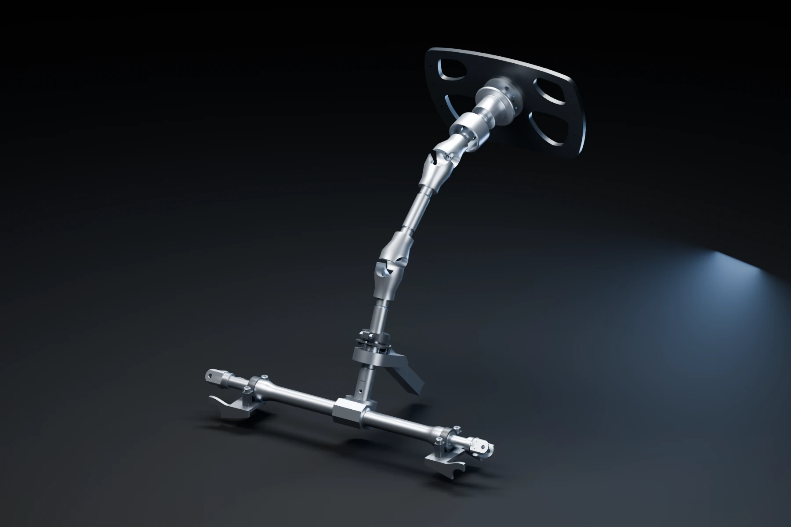
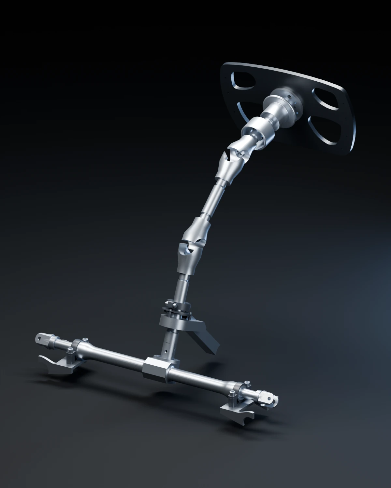
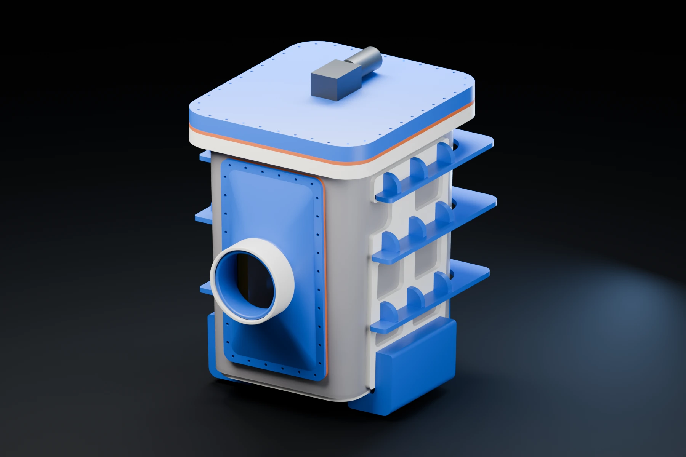
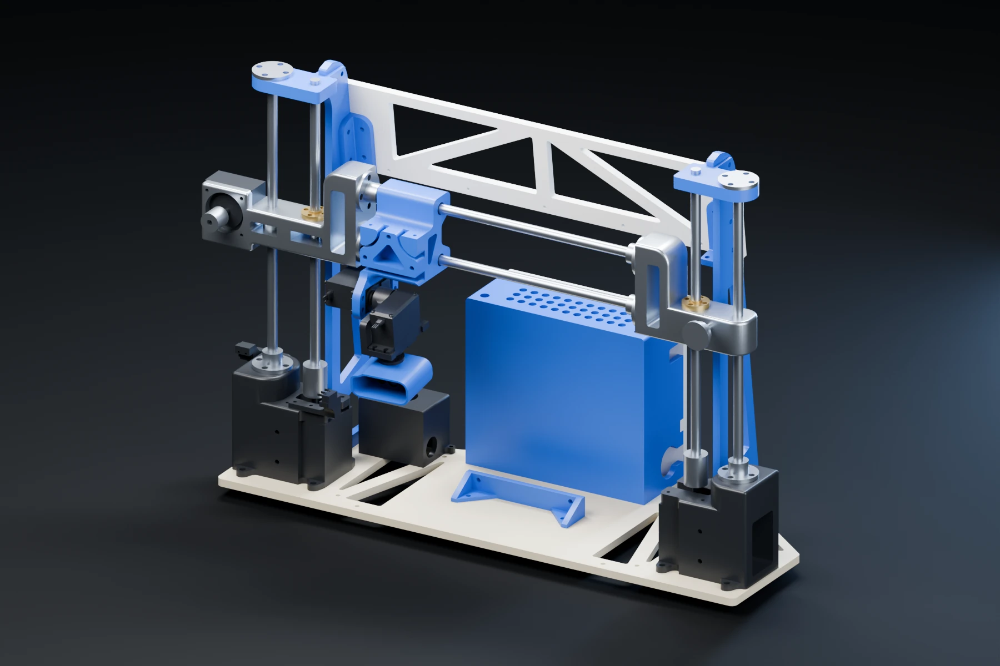

Real CAD — Editorial render review
Local art direction review · source CAD
Engineering, in a new light.
Blender Cycles renders of the original full-resolution GLB assemblies. The complete geometry stays in place. Graphite staging, broad silver highlights, restrained blue edge light. These are static product images, with no runtime model load.

Mk.8 Steering · 1800 × 1200Download

Steering / mobile · 1200 × 1500Download

Vine Robotics · 1800 × 1200Download

LiDAR Scanner · 1800 × 1200Download